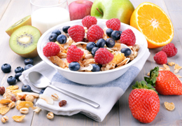

- 

Секреты
Здоровое питание
Утверждение что мы это то, что мы едим, на 100 процентов отражает действительность. Ведь от нашего питания зависит способность организма сопротивляться различным заболеваниям, а так же скорость обновления организма на клеточном уровне. Употребляя в пищу вредную еду, искусственно выращенные ГМО продукты, насыщенные антикоагулянтами и красителями сокращают нашу жизнь во много раз. Проблема здорового питания очень остро вошла в современный мир и остается главным вопросом в наши дни. Поэтому для всех семей, особенно где есть дети, полезно будет узнать о секретах здорового питания и списке рациона полезных продуктов. Для поддержания нормального функционирования организма и всех его систем, человеку необходимо получать ежедневно определенный минимум витаминов и микроэлементов. Все это мы получаем через еду и выпитые жидкости. Поэтому нужно тщательно подбирать свой рацион и питаться полноценно каждый день. Читать далее